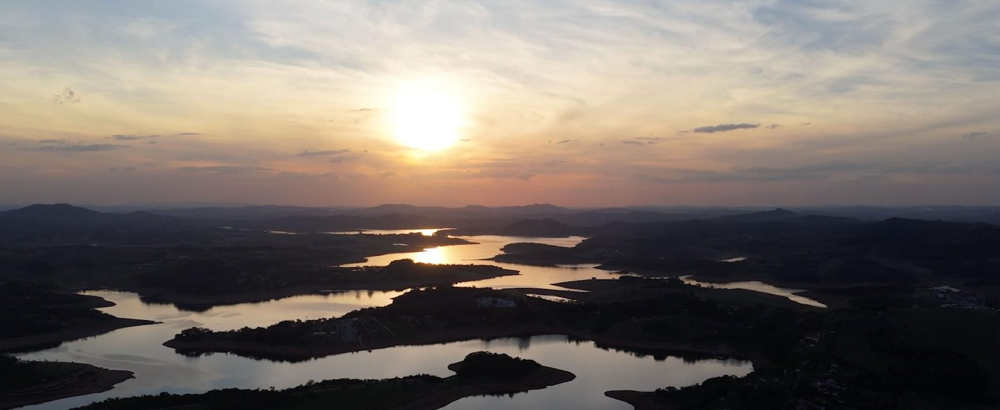
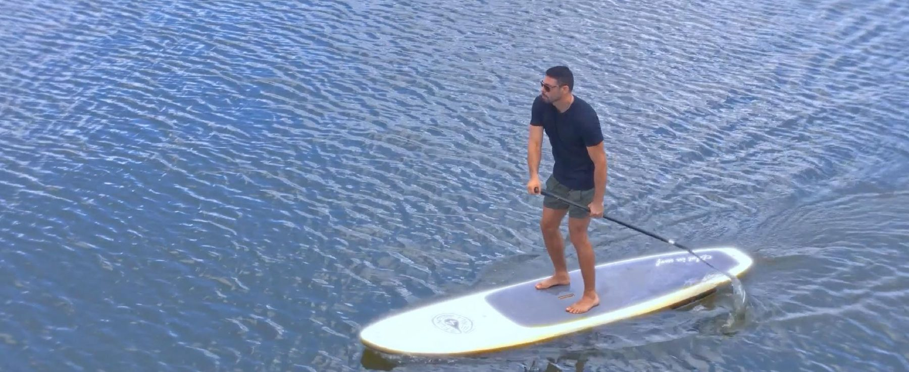
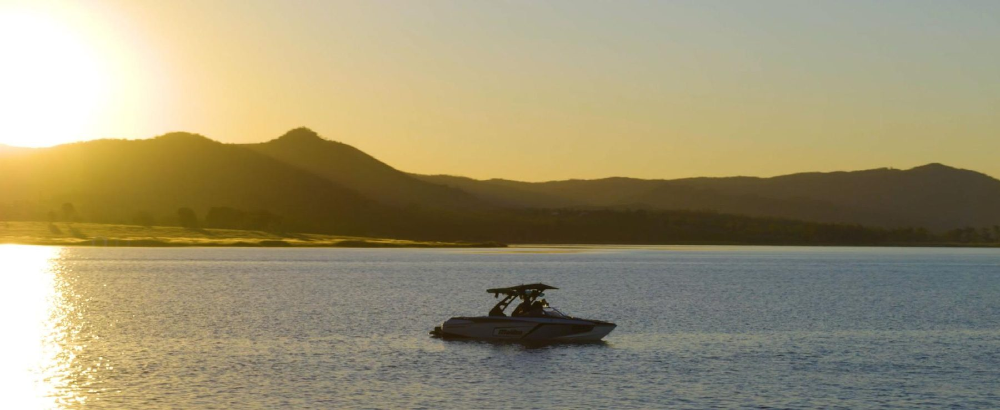
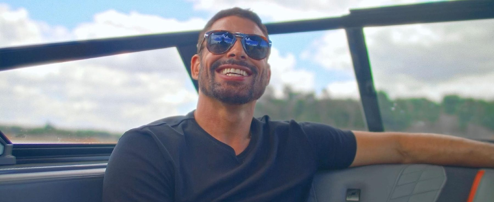

Vídeo oficial do produto — Vistas Joanópolis, com participação de Cauã Reymond.





A vida pede paisagem.
Joanópolis, São Paulo · Represa Jaguari · Biosphere Estilo de Morar by C. Reymond
Uma interpretação da essência Biosphere em contato com a represa Jaguari e a paisagem do interior paulista. Lotes de 1.000 a 3.000 m² e paisagismo de Alexandre Furcolin integram a proposta do residencial.
Clube náutico, marina e píer flutuante ampliam o acesso à represa. Quadras de tênis e beach tennis, academia, spa e sauna compõem a proposta de movimento e wellness, enquanto espaço gourmet, quiosques, fireplace, área kids e sala de jogos valorizam o tempo compartilhado.
Um refúgio que aproxima a vida da paisagem: a assinatura Biosphere Estilo de Morar by C. Reymond orienta uma experiência ligada ao movimento, à contemplação e ao bem-estar.
Imagens da campanha VISTAS JOANÓPOLIS - BIOSPHERE ESTILO DE MORAR BY C. REYMOND. Uso ilustrativo. Consulte os materiais oficiais do empreendimento.